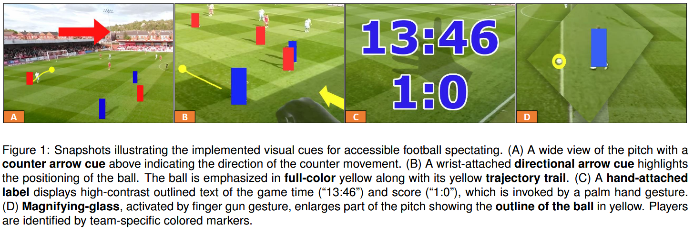

Beyond Audio: Visual Cues to Complement Football Commentary for Fans with Visual Impairments

(opens in new tab)
Venue. VRW (2026)
Materials.
DOI(opens in new tab)
Abstract. People with visual impairments face unique challenges while attending sports events. Likewise, the stadium atmosphere presents obstacles for using auxiliary interfaces on common media devices. In this work, we present a proof-of-concept AR-based VR application that uses visual cues to highlight key elements of football soccer matches. Following an exploratory approach, we conducted interviews and a qualitative co-design user study with football fans with visual impairments to gather their needs and preferences for such cues. Our findings indicate that AR visual cues can enhance the football spectating experience for fans with visual impairments.
Link to this page: